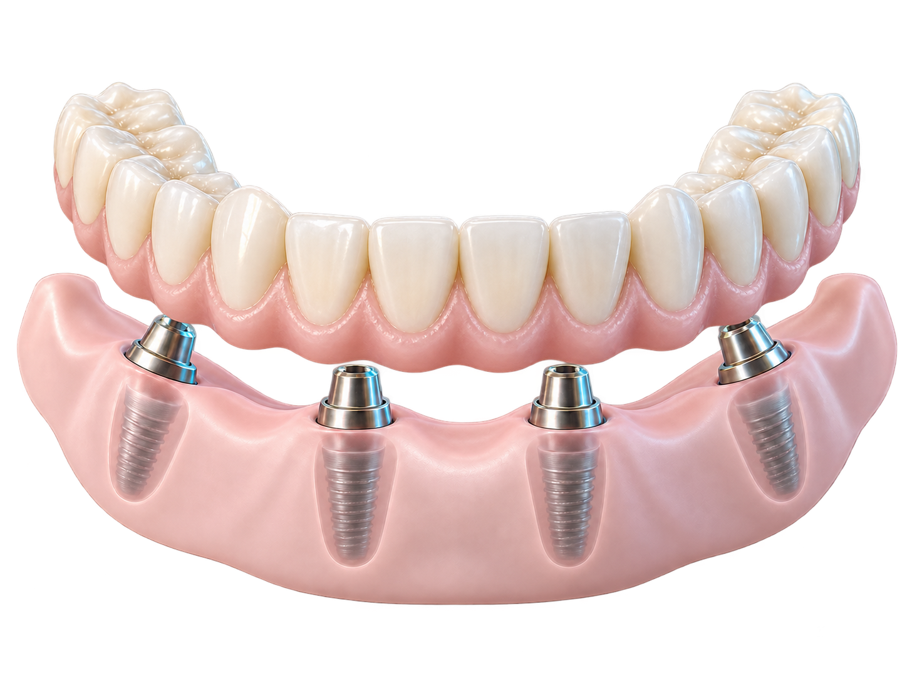
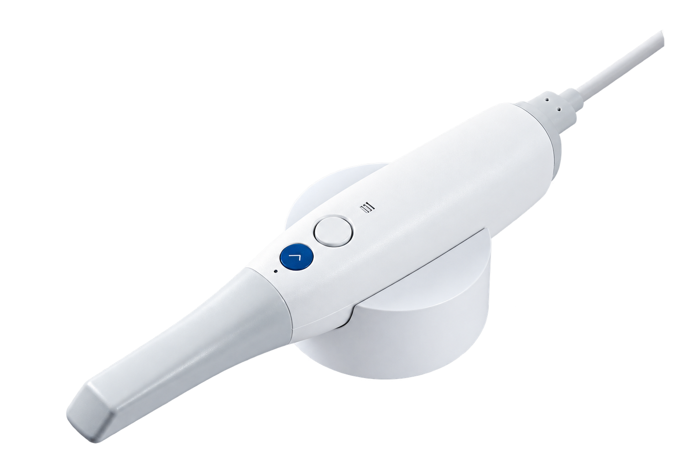

Более 5 800
одномоментных имплантаций
ЦЕНТР СТОМАТОЛОГИИ «ПОДМОСКОВЬЕ»
Верните себе здоровье зубов и улыбайтесь без стеснения
Имплантация в Ярославле с гарантией результата
All-on-4 Neodent — от 219 000 ₽Хирургический этап на одну челюсть. Nobel Biocare — от 370 000 ₽. Протезирование оплачивается отдельно.


одномоментных имплантаций
восстановлений по методикам All-on-4 / All-on-6
СЛЕДУЮЩИЙ БЛОК СТРАНИЦЫ